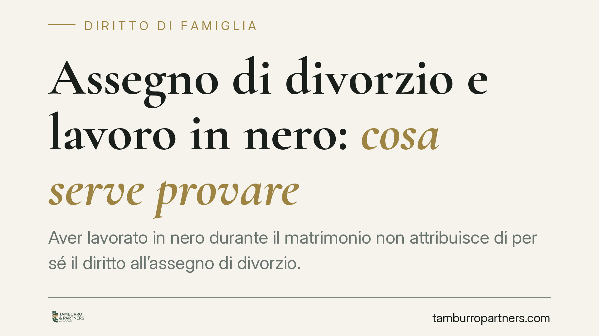

Assegno di divorzio e lavoro in nero: cosa serve provare
Aver lavorato in nero durante il matrimonio non attribuisce di per sé il diritto all'assegno di divorzio. La Cassazione ribadisce che occorre provare uno squilibrio economico attuale e il nesso con le scelte compiute in costanza di unione. Senza questi elementi, il danno contributivo resta irrilevante ai fini dell'assegno.

Il principio
Una recente ordinanza della Cassazione torna su una questione ricorrente nei giudizi di divorzio: chi ha svolto attività lavorativa non regolarizzata durante il matrimonio può pretendere l'assegno divorzile invocando il pregiudizio contributivo e previdenziale subìto?
La risposta è articolata. Il lavoro in nero è una circostanza di fatto, non un titolo automatico. Da solo non fonda alcun diritto. Diventa rilevante solo se inserito nella cornice dei due presupposti che la giurisprudenza richiede: uno squilibrio economico attuale tra gli ex coniugi e il nesso causale tra quello squilibrio e le scelte condivise durante l'unione.
*(Nota per la redazione: reperire e inserire numero, anno e sezione della pronuncia commentata prima della pubblicazione.)*
Inquadramento normativo
La disciplina di riferimento è l'art. 5, comma 6, della L. 1° dicembre 1970, n. 898. La norma indica una serie di criteri — condizioni dei coniugi, ragioni della decisione, contributo personale ed economico dato da ciascuno alla conduzione familiare, reddito di entrambi — da valutare in rapporto alla durata del matrimonio.
Le Sezioni Unite, con la sentenza n. 18287/2018, hanno superato la logica dei parametri applicati in sequenza rigida, affermando la natura composita dell'assegno: funzione insieme assistenziale, compensativa e perequativa. L'assegno non è una riparazione astratta di torti passati, ma uno strumento che riequilibra una situazione economica concreta, quando lo squilibrio è riconducibile a un percorso di vita comune.
In questa prospettiva, il lavoro sommerso rileva se dimostra che il coniuge ha rinunciato a occasioni professionali o a una posizione previdenziale regolare per contribuire alla famiglia, e se da ciò deriva oggi un divario patrimoniale apprezzabile.
Il nodo probatorio del lavoro sommerso
Qui si concentra la difficoltà pratica. Un'attività non dichiarata, per definizione, non lascia tracce documentali ufficiali: niente buste paga, niente versamenti contributivi, nessun contratto registrato.
Chi intende farla valere deve ricostruirla con mezzi alternativi. La prova per testimoni è ammessa e spesso decisiva: colleghi, clienti, fornitori possono attestare mansioni, orari e continuità della prestazione. Accanto ad essa operano le presunzioni semplici (art. 2727 c.c.), che consentono al giudice di risalire da fatti noti — un tenore di vita, una spesa costante, movimenti bancari ricorrenti — al fatto ignoto dell'attività svolta.
Proprio i movimenti bancari e le tracce economiche (accrediti periodici, versamenti in contanti, corrispondenza commerciale) sono elementi che rafforzano il quadro. Da soli raramente bastano; combinati fra loro possono raggiungere la soglia della prova.
Resta il punto critico: dimostrare l'attività non equivale a dimostrare il diritto. Occorre il passaggio ulteriore, cioè il nesso tra quel lavoro sacrificato e lo svantaggio economico odierno.
Implicazioni pratiche
Per chi chiede l'assegno, l'aver lavorato in nero non è una scorciatoia. È un elemento da spendere solo se si riesce a collocarlo dentro la logica compensativa: rinuncia a una carriera regolare, contributo alla famiglia, squilibrio che ne è derivato.
Per chi resiste alla domanda, la difesa passa spesso dalla contestazione del nesso e dalla dimostrazione che lo squilibrio, se esiste, dipende da fattori estranei alle scelte matrimoniali.
In entrambe le posizioni, la solidità della domanda va valutata prima di avviarla, alla luce degli elementi probatori effettivamente disponibili. Un'istanza fondata su affermazioni non supportate rischia il rigetto e l'aggravio di spese.
Cosa fare in concreto
- Documenta l'attività sommersa con ogni traccia disponibile: testimonianze, corrispondenza, movimenti bancari ricorrenti, ricevute anche informali.
- Ricostruisci lo squilibrio attuale confrontando redditi, patrimoni e posizioni previdenziali dei due ex coniugi al momento del divorzio.
- Dimostra il nesso causale tra le scelte compiute durante il matrimonio e lo svantaggio economico odierno: senza collegamento, il pregiudizio resta irrilevante.
- Valuta il regime probatorio in anticipo, individuando testimoni utili e verificando quali presunzioni possano essere validamente invocate.
- Non affidarti all'automatismo: il lavoro in nero è una circostanza da provare e collegare, non un titolo che opera da sé.
Contributo informativo a cura di Tamburro & Partners Avvocati. Non costituisce parere legale.
Ogni famiglia ha il suo equilibrio.
Separazione, divorzio, affidamento, assegno: se vuoi un confronto riservato su una specifica situazione, scrivi allo studio. Ti rispondiamo entro un giorno lavorativo.